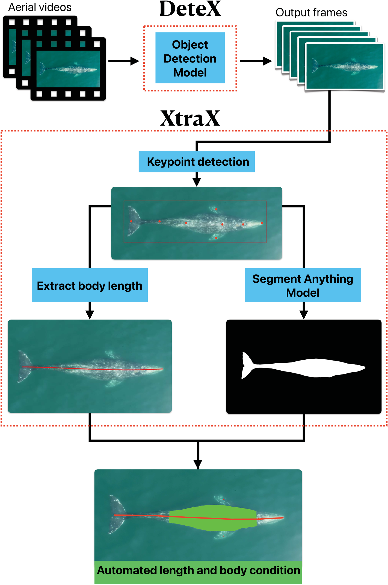
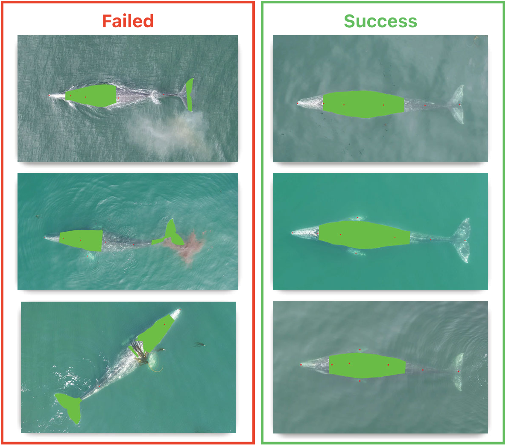

逐幀檢視 · 1/24 秒
目前顯示完整研究圖。下方保留圖版、出處與文字。
畫面引用作者圖版說明方法；原圖與標記可一併查看，不代表本頁重新執行了辨識或量測。
AI × 生態研究 · 灰鯨影像量測
先看清楚鯨的身體，再看研究如何找出輪廓、量長度，並檢查哪些影像適合使用。

目前顯示完整研究圖。下方保留圖版、出處與文字。
畫面引用作者圖版說明方法；原圖與標記可一併查看，不代表本頁重新執行了辨識或量測。
從上方看，可以看見灰鯨的背部、頭和尾。研究人員想從這些影像，描述牠的長度與身體形狀。
這是作者研究圖中的真實灰鯨影像，並非生成的鯨。
DeteX 從影片中找出含鯨的幀畫面，讓後面的量測從這些照片開始。
本片用作者已發表的影像示例說明；不是原始影片的逐秒重播，也沒有在本輪重跑 DeteX。
XtraX 找出吻端、尾鰭缺刻及背部等位置。這些點，讓後續計算知道要沿著哪裡量。
紅點是作者圖中的輸出。尾鰭缺刻是尾鰭中央的凹口，不是尾鰭最外側的尖端。
把背部的位置連成平滑曲線，從吻端量到尾鰭缺刻，得到影像中的長度。
身體若有彎曲，不能直接把頭尾直線當成體長。紅線來自作者，移動光點只引導閱讀，並非新的量測。
白色區域標出模型保留的鯨體範圍。後續才能在這個範圍裡，量出需要的身體區域。
這是作者呈現的分割結果，稱為遮罩。它仍要與原影像對照，確認有沒有把浪花或海水也算進來。
這項灰鯨研究選取從頭端算起、體長 20% 到 70% 的軀幹區域。綠色範圍配合長度，用來計算體面積指數 BAI。
BAI 把區域面積相對於區段長度的平方來表示，方便比較體型。它不是體重，也不能單獨診斷健康。
照片上的長度以像素表示。要換成公尺，需要知道影像尺寸、鏡頭與感光元件規格，以及相機距海面的高度。
此段相機圖是幾何示意。這次沒有取得與圖中鯨匹配的完整尺度資料，因此不填入推測的公尺數。
浪花、遮擋和不清楚的邊緣，都可能讓關鍵點或身體範圍出錯。研究人員需要回頭檢查每張結果。
接著比較作者提供的失敗與成功示例。它們是不同影像，不是同一張照片修正前後。
把照片、量測位置與相機資料一起保留，研究人員才有辦法重新核對，並進一步研究鯨的體型變化。
這支動畫解釋作者流程，沒有產生新的灰鯨量測結果。
影像中的像素長度還不能直接當作公尺。換算需要相機與拍攝高度等資訊；資料不齊全時，就保留為影像上的量測示範。
